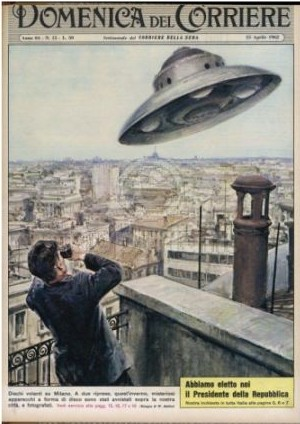

Couverture du Domenica del Corriere d'avril, illustrant l'observation d'ovnis "à la
George Adamski" au-dessus de Milan (Italie) Gaspare de Lama < Mary Evans Picture Library 2007

Observation à Wurtland (Kentucky)Cas Blue Book n° 7851 non résolu.
Un phénomène rouge traverse les USA de l'état de New York à celui de l'Utah, suivi sur
toute sa route par les radars, atterrit près d'une centrale électrique et la fait tomber en panne. 48 mn plus tard,
poursuivi par des chasseurs à réaction, il explose en plein ciel Edwards, Frank: "Que se passe-t-il ici ?", chap. 1 de Soucoupes Volantes - Affaire sérieuse, p. 11.
A Groom Lake, 1er vol d'essai du A-12 Blackbird (#121)
McIninch.
Ariel 1, satellite scientifique britannique.
Le pilote d'essai Joseph Walker rencontre
lors d'un vol d'essai 2 objets non-identifiés en forme de disque, et les filme.
À Las Vegas (Nevada), Crash ?
Randle, K.: "The Las Vegas UFO Crash", A Different Perspective, 2008-08-01